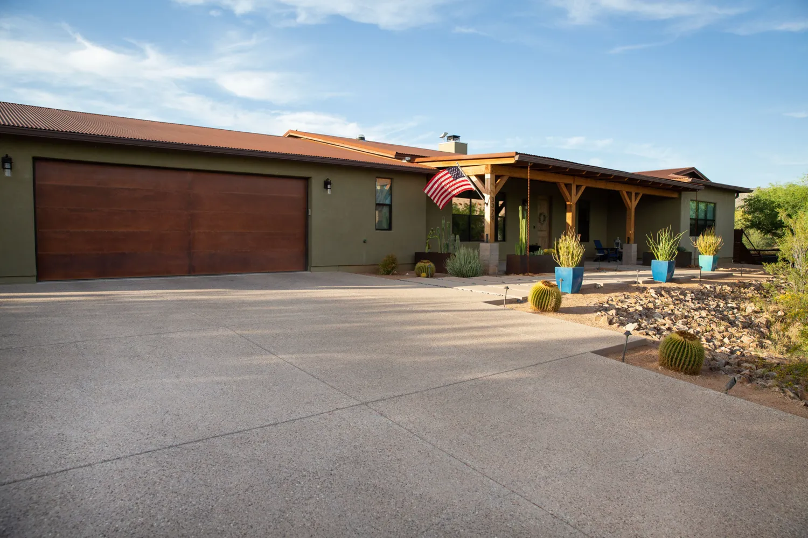
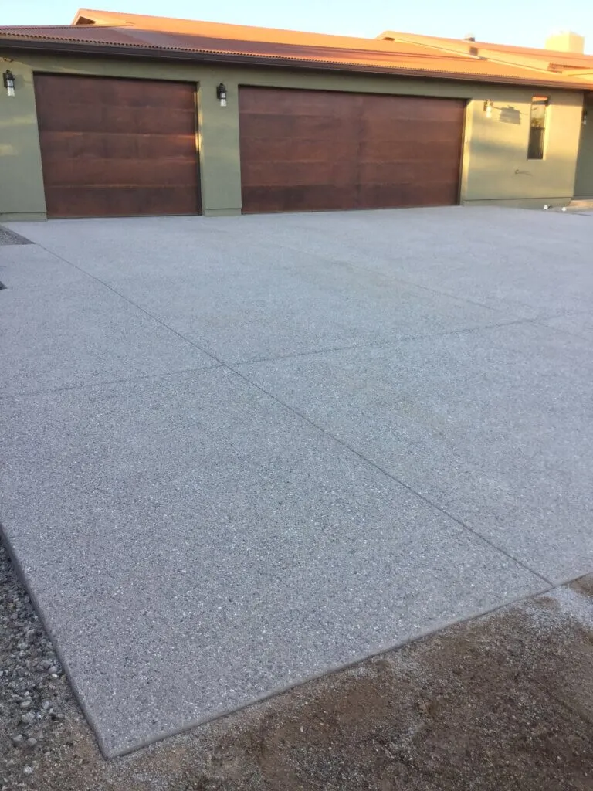
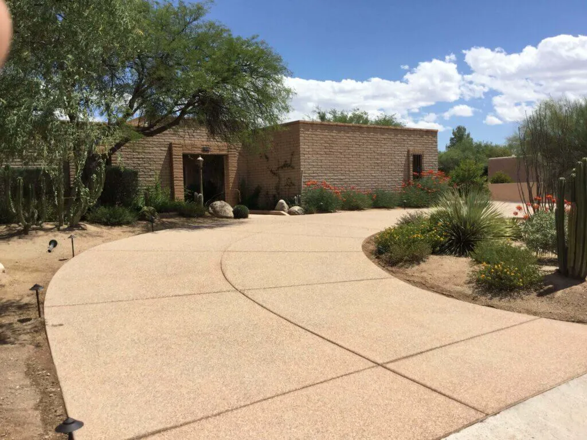
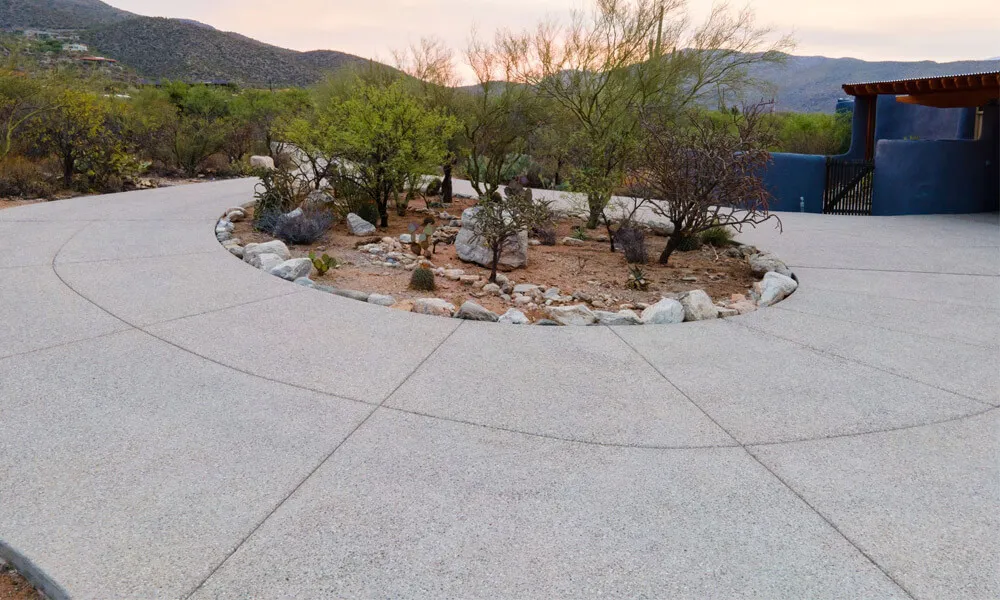
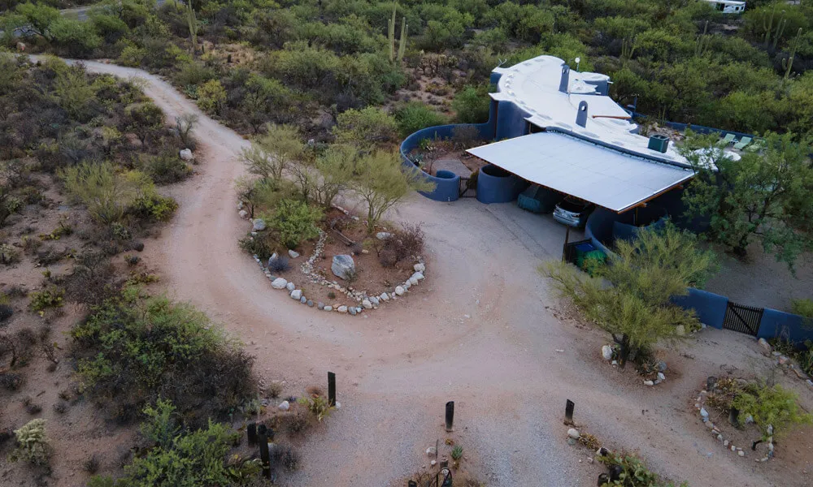
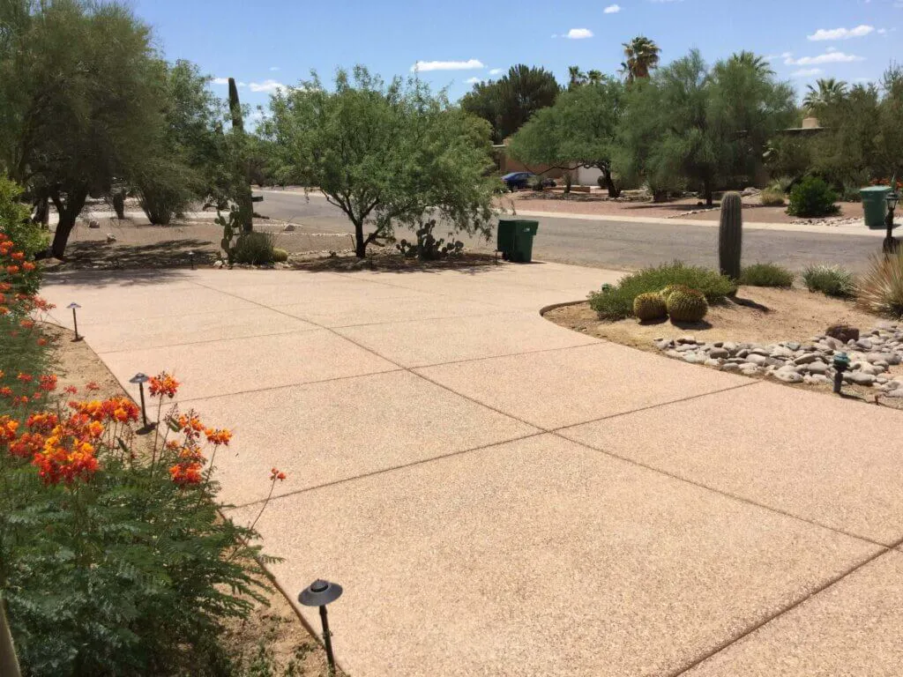

Concrete driveway contractor in Tucson, AZ
A driveway takes the heaviest daily use of any concrete on your lot. Zona Concrete tears out old drives, forms, compacts the dirt and pours new concrete driveways in Tucson and Pima County, in a finish that suits the house and the yard.

- Arizona licensed general contractor
- Free estimates
- 4.9 stars from 80 Google reviews
What's included.
Tucson driveways deal with 100 degree summers, strong sun, monsoon runoff and desert soils that move. Concrete does not need recoating the way asphalt does, but it only lasts if the dirt under it is compacted, the forms are set so water runs where you want it, and the finish is chosen for how you will use it. Exposed aggregate is the finish Zona Concrete recommends for driveways because it hides tire marks.
- Demolition and haul-off of an old driveway
- Forming, grading and compacting the dirt
- Pouring and finishing the concrete
- Exposed aggregate, sand, sweat and other finishes
- Color added to the mix if you want something other than gray
- Design and project management from the first visit to the last pour
How we do it.
-
Walk the site
Mac meets you at the house, looks at the layout, the slope and where water goes, and talks through finish and color.
-
Demo and form
Old concrete comes out where there is any. Forms go in to the lines and levels you agreed on.
-
Compact the dirt
The dirt under the slab is compacted before any concrete is ordered.
-
Pour and finish
The concrete is placed and finished in the texture you picked. Zona says it takes about a day to dry. Ask Mac when it is safe to drive on.
When to replace a driveway.
If any of these sound familiar, the sooner someone looks at it the cheaper it usually is to fix.
- Cracks that keep opening or sections that have settled or tilted
- Water pooling against the garage or house
- You have an asphalt drive and are tired of recoating it
- You are adding a garage, a wider approach or a new layout
Recent work.





Driveways questions.
Concrete or asphalt for a driveway?
Zona's answer is concrete. A concrete driveway never needs to be recoated, while asphalt needs recoating about every two years.
Which finish do you recommend?
Exposed aggregate for driveways, because you do not see tire marks on it. Sand, sweat and salt finishes are also available, and the concrete can be colored.
How long does a driveway take?
The standard process is demolition, forming, compacting the dirt and pouring. Zona says the concrete takes about 24 hours to dry. Plan on keeping vehicles off longer and ask Mac for the date on your job.
Can an old concrete driveway be resurfaced?
No. Zona does not do overlays or coatings, so a worn driveway is torn out and replaced. For overlay or coating work they recommend Hastings Coatings.
Ready for a driveway that lasts?
Call us, or send the details and Mac will call you to set up a free estimate.